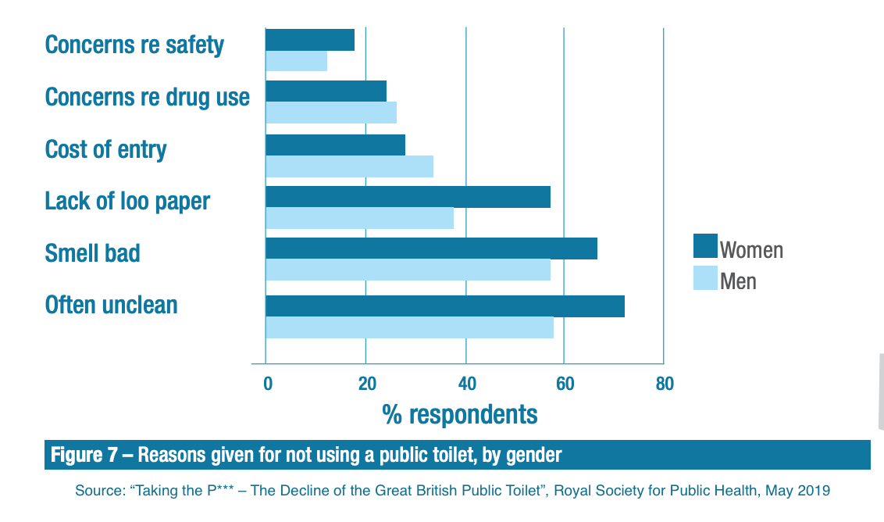
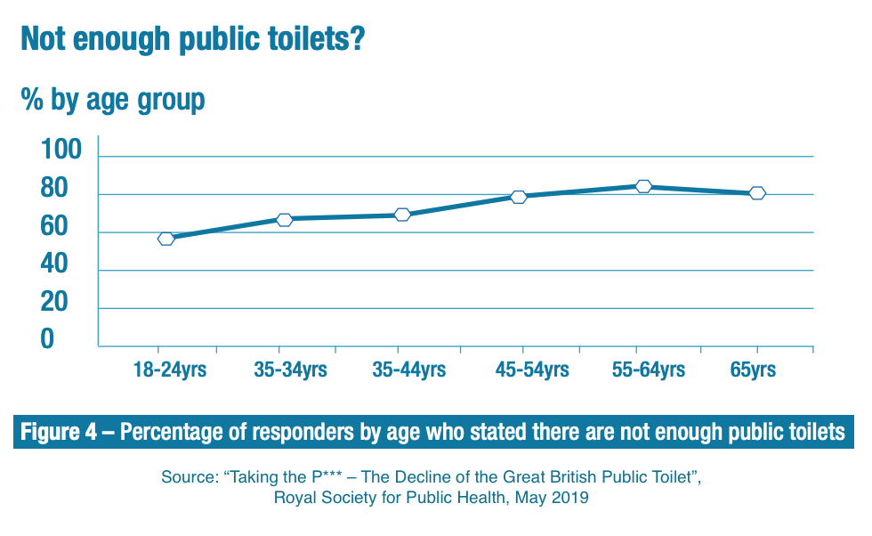

Finding a clean, open and accessible toilet near you should not be a challenge in the 21st century. However, not only are public toilets decreasing in number due to lack of funding, many people are deterred from using public toilets altogether due to valid concerns around hygiene and safety.
Simultaneously, we have a large number of toilets in privately owned businesses such as pubs and restaurants which are usually only available to paying customers. By encouraging businesses to open up their toilets, collating accurate data on all existing publicly accessible toilets in London and establishing a feedback loop between public toilet owners and users, Toilets4London will make London a more open, dignified and healthy city.
According to a 2018 survey by the Royal Society of Public Health, three in four of the UK public think there are not enough public toilets in their area.
This same study found that as many as one in five people are deterred from going outside due to their anxiety around finding a toilet and this proportion is much higher among women, the elderly and those with bladder or bowel conditions. With COVID-19 reshaping how we move and interact in public spaces, it is time to recognise the importance of toilets to the equitable, dignified and healthy participation in public life. The economic and societal benefits of adequate toilet provisions have never been clearer.
The money collected for paid toilets will go to the toilet owners once the cost of running the app is deducted - the charging system is meant to encourage businesses that never used to let non-customers use their toilets to open up the toilets for a small fee of 50p-£1 (cheaper than buying a drink).
It is important to remember that maintaining clean toilets costs money. The average running cost of a public toilet varies between £15,000 and £60,000 a year. In an ideal world, we would have twice as many public toilets and they would all be perfectly clean all the time. However, at this point in time there are some situations when it's only viable to provide hygienic toilets for a small fee.
Overall, the aim is not to turn free toilets into paid ones, but to increase the number and choice of toilets in London, and display all the toilets (free and paid) in one app with relevant information so that it is always easy to find a toilet near you.